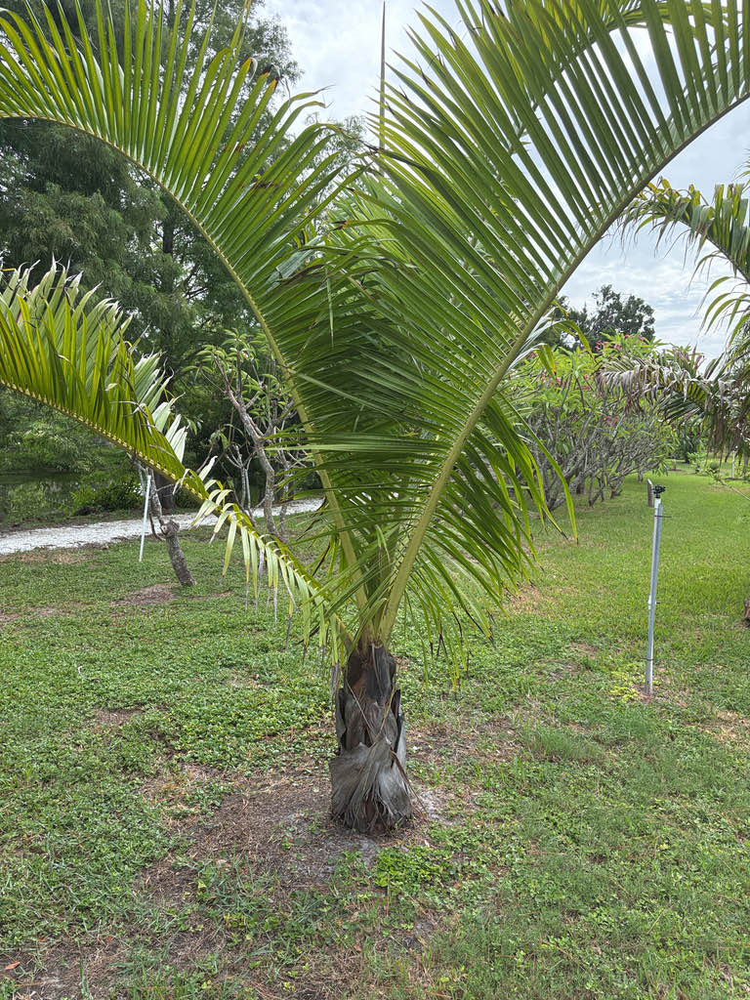

- Fewer than 15 mature Stumpy Palms are known to exist in the wild. They survive at just two sites in northeastern Madagascar, making this one of the rarest palms you are likely to encounter in any garden. Both wild sites are protected, and cultivated plants like this one now represent an important backup population.
- This palm was formally described by science in 2002 — and botanists did it not from a wild specimen, but from a single tree growing in a private garden in Hilo, Hawaii. Wild populations in Madagascar were found only afterward.
- The easiest way to spot it is the warm orange crownshaft glowing just below where the leaves spread out. Look lower and you will find its stranger feature: the trunk begins with a curved, saxophone-like heel before turning upward.
- The Stumpy Palm's two wild locations both fall inside protected reserves. It is a fortunate coincidence that may be the main reason the species has not already disappeared from the forest.
Dypsis carlsmithii is endemic to the lowland rainforests of northeastern Madagascar, where it grows at elevations between about 20 and 100 meters. Its entire known wild range consists of two small sites: one on the western coast of the Masoala Peninsula and one near Mahavelona, north of the port city of Toamasina.
The species entered cultivation before it was formally described. Palm enthusiast Jeff Marcus encountered a specimen growing in the Hilo, Hawaii estate of Donn Carlsmith and dubbed the unidentified plant Dypsis 'stumpy.' He and others distributed seeds among collectors, and the nickname traveled with them.
In 2002, Kew botanist John Dransfield and Marcus formally described and named the species Dypsis carlsmithii in its honor. Wild populations in Madagascar were confirmed only after that publication.
In Florida cultivation it is uncommon but present, prized as a bold specimen palm for tropical and subtropical gardens.
- The most immediately striking feature of this palm is its crownshaft — the smooth, tubular column formed by the tightly wrapped leaf bases just below the crown. That column glows a warm orange and flashes red flecking on newly exposed growth, setting the Stumpy Palm apart from most other large feather palms at a glance.
- Look closely at the base of the leaf stalks and you will also find a coating of reddish-brown fuzz — tomentum — another tactile detail worth a closer look.
- With plumose, arching fronds — leaflets arranged at multiple angles so the whole frond reads as full and three-dimensional rather than flat — and an olive-green trunk banded by tightly spaced leaf-scar rings, this is one of the most architecturally imposing members of the genus Dypsis.
- The closely spaced leaf scars are one of its characteristic features and give the trunk a strongly banded appearance.
- The IUCN Red List classifies Dypsis carlsmithii as Critically Endangered, reflecting a wild population estimated at fewer than fifteen mature individuals. Both wild sites fall within protected reserves, which offers some security — but the margin is uncomfortably thin.
- The thriving cultivated population in botanical gardens and private collections around the world now represents a meaningful backup to what remains in the forest.
As a non-native palm with no co-evolutionary history with Florida's wildlife, the Stumpy Palm's direct wildlife value here is modest. The interfoliar inflorescences attract pollinating insects when in bloom, and the fleshy black fruits are likely available to fruit-eating wildlife, which can help disperse palm seeds in its native rainforest setting.
In Madagascar those relationships are part of a broader ecological web that does not follow the plant into the garden. Visitors looking for the park's most active pollinator and butterfly habitat will find it among the native flowering plantings. This palm is better appreciated here as a conservation ambassador: a plant whose survival increasingly depends on gardens like this one.
Propagation is primarily by seed. The species is monoecious — individual trees carry both male and female flowers on the same plant, so a solitary specimen can set fruit. Germination can be slow, taking several weeks to months.
The inflorescence is interfoliar — it emerges from among the leaves rather than below the crownshaft — and is branched to several orders with slender rachillae. Both male and female flowers are carried on the same inflorescence.
Small, oval fruits that turn black when ripe. Each fruit contains a single seed. The closely spaced leaf scars on the trunk are a reliable identification feature even when the palm is not in fruit.
Pinnate (feather-type) and plumose — the leaflets are arranged at multiple angles around the rachis, giving the whole frond a full, three-dimensional, plumed look rather than a flat silhouette. Mature leaves are roughly 140 cm long and 80 cm wide. They arch gracefully outward and give the crown a broad spread.
Solitary, stout, and olive-green, with closely spaced rings of old leaf scars that give it a distinctive banded appearance. The trunk can approach about 20 inches (roughly 50 cm) in diameter. Directly below the leaf crown is a smooth, attractively orange-toned crownshaft that shows bright red flecking on newly exposed growth.
As a young plant, the base of the stem curves downward in a distinctive saxophone-like heel before pushing upward.
Start with the crownshaft: that warm orange column just below where the leaves spread out is the fastest identifier, especially vivid when fresh growth shows bright red flecking. Next, look at the base of the trunk — the curved, saxophone-like heel where the stem bends into the ground before rising upward is a distinctive quirk.
Then take in the overall silhouette: plumose fronds that read as full and three-dimensional rather than flat, arching above an olive-green trunk whose tightly banded leaf-scar rings are one of its most characteristic features. If the palm is in bloom or fruit, look for flower or fruit stalks emerging from among (not below) the leaves.
No toxicity to people, dogs, or cats has been documented. The fruit is not a food source, but it is not harmful. Otherwise harmless — people simply don't eat it.
Current botanical name: Kew's Plants of the World Online currently accepts Chrysalidocarpus carlsmithii, with Dypsis carlsmithii treated as a synonym following a 2022 phylogenomic study of Madagascan palms.
Dypsis carlsmithii remains the name most widely used in horticulture and is the one under which this plant is best known to collectors and botanical gardens — so visitors may encounter both names.
Why 'Stumpy'? The nickname was given to the unidentified palm in cultivation because of its stout, compact appearance and distinctive growth form. The name stuck with collectors even after the species received its scientific name — and it remains confusingly non-unique because another palm also goes by 'Stumpy.' If you are sourcing this palm, always verify the botanical name.


- © Randall Carter (CC-BY-NC), via iNaturalist